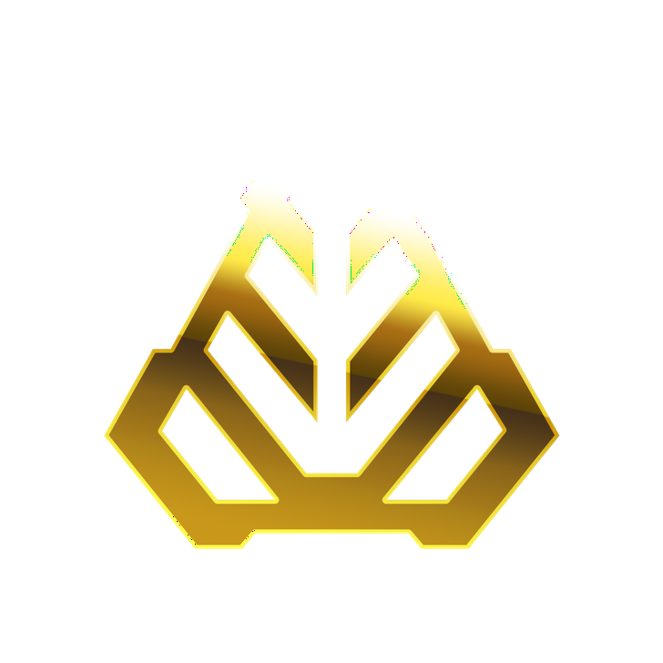
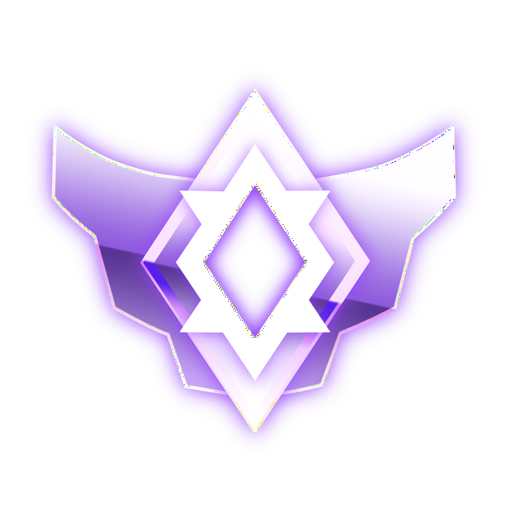
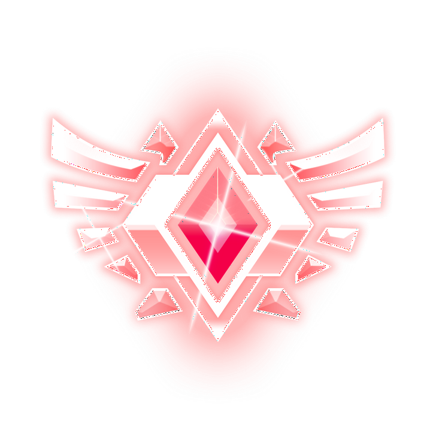

Bronze: início da jornada no Rocket League.
Prata: Começa a acertar a bola, mas ainda joga mais por instinto do que por leitura.

Ouro: Já entende o básico do jogo, mas a consistência ainda decide tudo.

Platina: Confiança maior que a habilidade, não larga a bola e acha que carrega o time.
Diamante: Ou joga quase como Champion, ou desiste no primeiro erro e tilta geral.

Champion: Domina o jogo com facilidade, mas só no Champion 3 a excelência aparece.

GC: Nível altíssimo e capaz de tankar SSL, apesar do GC1 às vezes parece um Platina perdido.

SSL: A nata do jogo, onde só ficam os que dominam tudo.
RLCS: Os melhores dos melhores. Criam mecânicas, ditam o meta e jogam acima de qualquer rank.